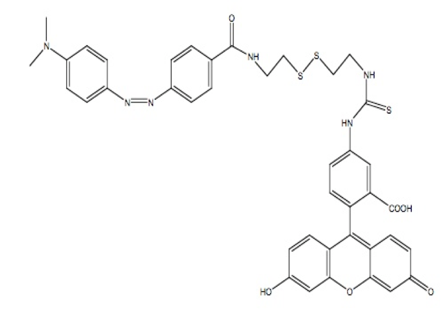
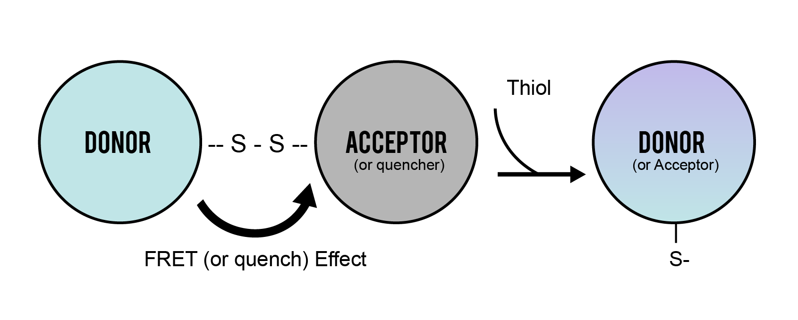
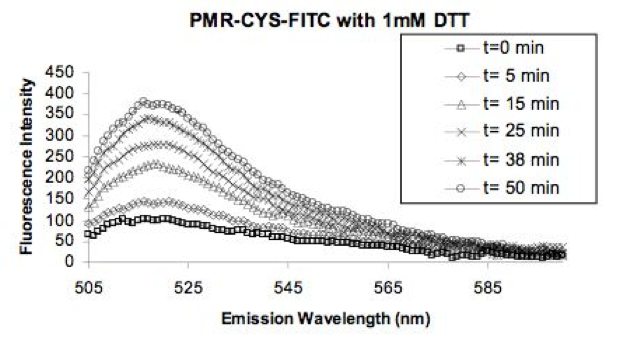

This product is used for: Unlike most thiol-reactive probes, PMR-CYS-FITC can also detect certain disulfides, making it useful for ‘disulfide proteomics’.
PMR-CYS-FITC (DSSQ)
Semkur (Quenched) Probe uses PMR to Quench Fluorescein
Semkur (Quenched) Probe uses PMR to Quench Fluoresceindo
EXmax: 485 - 495
EMmax: 516 - 525
Each Probe quantitatively detects a wide range of thiol reductants TCEP, DTT, HcV...
Responsive to biologically relevant concentrations changes for glutathione.
Probe can measure thiols in bacteria and zebrafish embryos
Fluorescence emission profiles for reaction between PMR-Cys-FITC (DSSQ1) and GSH at [GSH] = 4 mM (a), 8 mM (b) and 16 mM (c), The lowest profile was at 0 mM GSH followed by 5 min, 10 min, 20 min, 40 min and 60 min after adding GSH respectively. Data were fitted to the exponential equation: F= F0 + a( 1- e-kt), where a = Fmax-F0?, the fluorescence change due to reaction, and k is the rate constant for GSH reduction of the DSSQ probe. (d) Rate constant for reduction of the dithio in DSSQ, as a function of [GSH]. k is first order in [GSH] (note the k values were multiplied by a factor of 102). Reactions were carried out in 100 mM Hepes buffer, pH 7, with excitation at 490 nm, and at 25OC. Fluorescence readings were done on a Jasco FP-6500 spectrofluorotometer.
NIH 3T3 cells were incubated for 30min in Hoechst, Tetramethylrhodamine (TMRM), and Semkur. Images of the live cells were taken on a Confocal Microscope. A is Hoechst a nuclear dye. B is TMRM a mitochondrial dye. C is Semkur which stains the entire cell green. D is composite image of all three dyes. Co-localization can be seen through the overlap of red and green colors. All images were taken under the same settings.
NIH 3T3 cells were incubated for 30min in Hoechst, Lysotracker Red (LTR) ,and Semkur. Images of the live cells were taken on a Confocal Microscope. A is Hoechst a nuclear dye. B is LTR a lysosomal dye. C is Semkur which stains the entire cell green. D is composite image of all three dyes . No co-localization can be seen through the lack of overlap of red and green colors. All images were taken under the same settings.